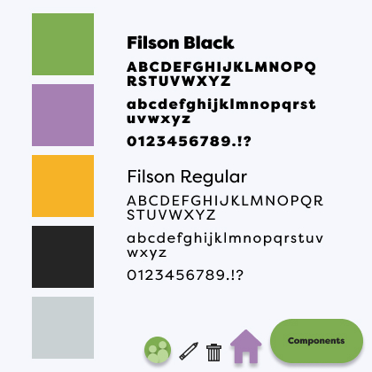
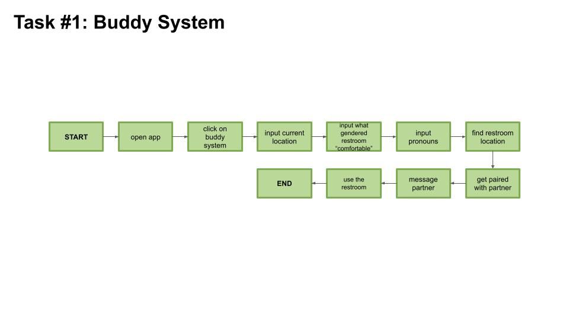
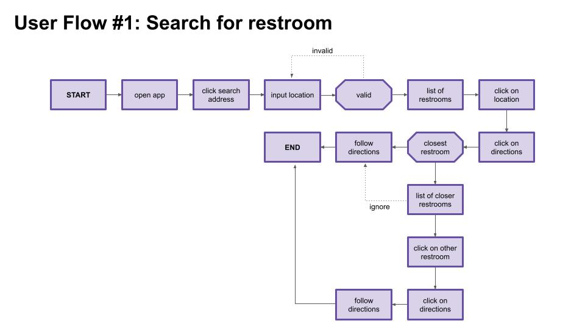
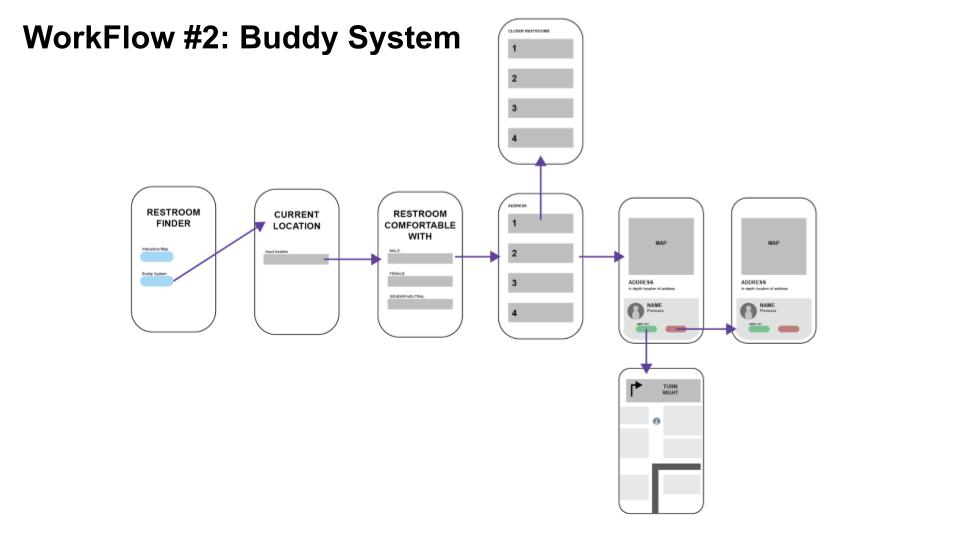
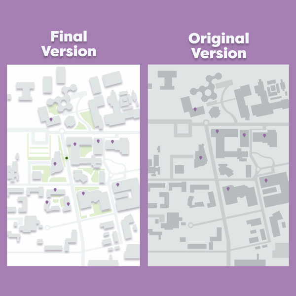
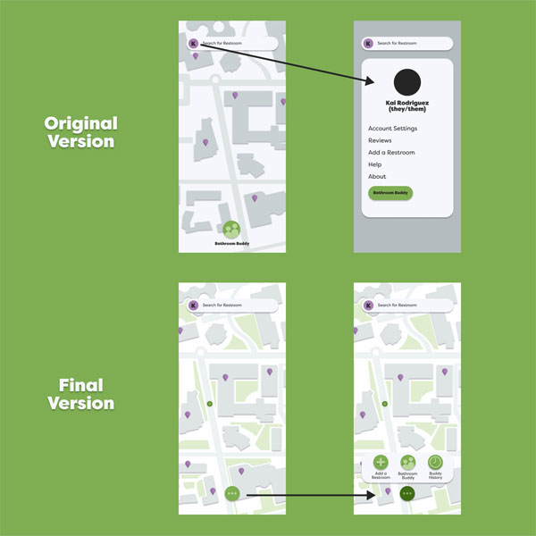

Bathroom Buddy
Figma, Adobe Illustrator
I want this app to be a safe space for gender non-conforming individuals and to rid the problem of lack of access to gender inclusive spaces. It would allow individuals to find gender neutral restrooms, should they not feel comfortable using male/female restrooms. Individuals can find these spaces without having to ask others, which may be difficult for others without having to disclose their gender identity. Although aimed towards those who identify as gender non-conforming, individuals do not have to identify with this community to use this app.
UX Research
I started by researching already developed apps focusing on solving the similar issue and performing a SWOT analysis to get a better understanding. I focused on the Strengths, Weaknesses, Opportunities, and Threats, of these already developed apps.
After developing a SWOT analysis, I created a storyboard with a scenario I believed an individual would need to use my app. With this process I found the app is most likely going to be used for individuals traveling to new areas and will not be as necessary for areas they are used to because they will already know locations. It also taught me the importance of making the app inconspicuous so it does not draw too much attention while the user is in public because most of the time they will not be in safe environments when they are using the app.
Visual Design
When creating the visual design of the app, I had to keep in mind that using traditional blue and pink colors may trigger users. This was, also, important towards making the app inconspicuous. Therefore, I decided to use the colors of the genderqueer flag: green, purple, and white, which would allow me to stay clear from blue and pink. I also added yellow as another accent color to pay homage to the nonbinary flag and to give the app a bright, welcoming feeling. To continue this inviting atmosphere, I rounded the corners of shapes, so there were no harsh angles.
User Interface
  User Experience
Task #1: There are no available gender neutral bathrooms in the area, but you need to use the restroom as soon as possible. You open the app to complete the “Bathroom Buddy” feature to find another individual needing to go to a gendered restroom, so you don’t have to go yourself.
Task #2: You walk by a gender neutral bathroom but notice that it is not in the app database. You go to “add a new restroom” feature to upload the bathroom to the database. After you fill out the information, you notice you put the wrong information, so you go back to edit the submitted information.
Revisions
Design Revisions: While I had my accent colors chosen, finding the right shade of greys was a challenge for me. As stated before, I wanted the app to feel welcoming, however, when designing the map, it always felt too dark and uninviting, due to me using dark greys that were on the cooler spectrum. I eventually lightened the grays used and utilized drop shadows to create separation from similar greys.
User Experience Revisions: The original home screen forced users to click on the “circle K” icon at the search bar to access various tasks. During my user testing, I noticed that the users would ignore that icon and immediately go to “search for a restroom” or the “Buddy Bathroom” icon, even when given the task prompt of “adding a new restroom”. As a result, I made a new icon that would lead to the three important features of the app and created a graphic that would make it known everytime one opens the app.
Summary
After completing this project, I learned how important it is to get user feedback in order to design a user friendly product. It is going to take many iterations and many trials with different users to get a result that is easy to function. I am most proud of the “Bathroom Buddy” feature because it took time to decide what features were necessary to include and in what order all tasks needed to be presented. However, I am proud of the end result as I feel usability wise it is clear what the user needs to complete and aesthetically wise, I feel I designed an welcoming space for individuals seeking help for a basic need. The most challenging part of the project was figuring out how to include all the features necessary to make the app run properly, but still make the screen not feel overwhelming for the user. I struggled with attempting to simplify the screen to make one task easier, but risked losing the usability of another task.